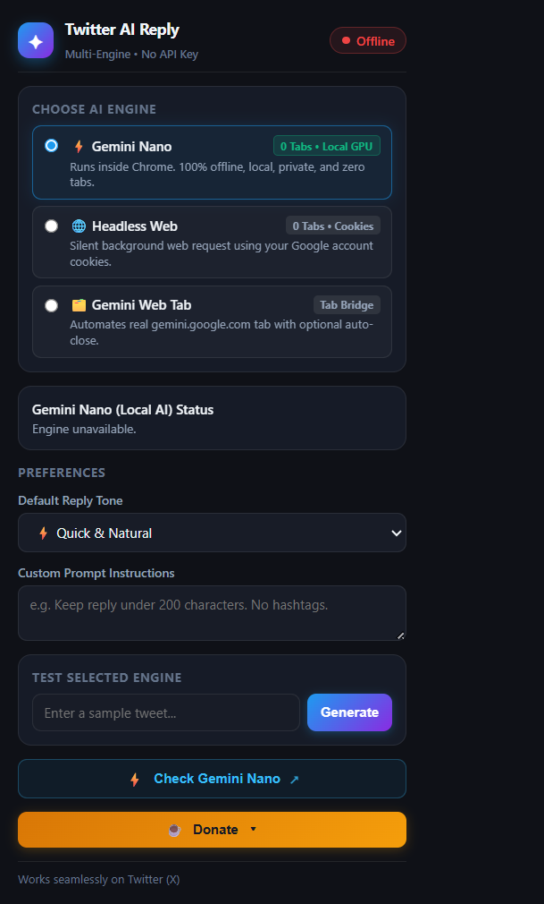
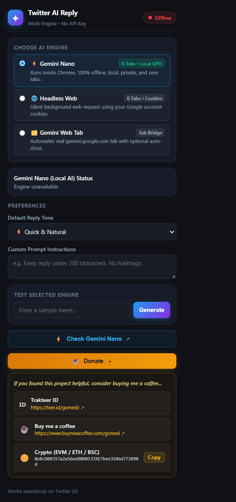

Intelligent Twitter Replies.
Zero API Cost.
Generate authentic, contextual, and high-impact tweet replies in a single click directly inside your Twitter (X) composer. Powered by on-device Gemini Nano or your existing Google login session.

Engineered for Seamless Twitter (X) Engagement
Experience effortless interaction with powerful features tailored for creators, developers, and power users.
One-Click Native Insertion
An intuitive "✦ AI Reply" button is injected natively into tweet threads and reply composer boxes, activating Twitter's native Reply button seamlessly.
On-Device Gemini Nano
Harness Chrome's built-in neural hardware. 100% offline-ready, lightning-fast inference, zero cloud dependencies, and zero open tabs.
6 Curated Reply Tones
Quick & Natural, Agree & Supportive, Thoughtful Insight, Witty & Humorous, Counter-Point, or Ask a Question—crafted to fit every conversation.
Custom Prompt Directives
Provide custom instructions like "keep replies under 150 chars", "no hashtags", or "reply in casual Indonesian/English" to match your unique brand voice.
100% Private & Client-Side
No remote developer servers, no analytics trackers, and no middleman databases. Everything executes safely within your local Chrome sandbox.
Smart Tab Auto-Closing
When using Web Tab automation mode, temporary Gemini tabs close themselves automatically as soon as the reply is generated, keeping your workspace clutter-free.
Pick the Engine That Fits Your Hardware
Switch engines anytime with one click in the extension popup.
Gemini Nano
Chrome Built-in Local AIRuns 100% on your local GPU/NPU using Chrome's built-in Prompt API. Zero tabs, zero server latency, and works offline.
- ✓ 0 tabs opened
- ✓ Instant generation (<1s)
- ✓ 100% private on your machine
- ✓ Requires: Chrome with Built-in AI
Headless Direct
Silent Cookie SessionDirectly communicates with Gemini's backend API using your active Google login cookies in silent background requests.
- ✓ 0 tabs opened
- ✓ Zero API key required
- ✓ Full cloud model quality
- ✓ Requires: Logged into Gemini in browser
Gemini Web Tab
DOM Tab AutomationAutomates a lightweight Gemini web tab to prompt the AI and extracts the reply directly from the chat UI with auto-close.
- ✓ 100% reliable fallback
- ✓ Auto-close toggle included
- ✓ No technical setup needed
- ✓ Requires: Logged into Gemini in browser
Try the Reply Generator Live
Experience how the extension crafts contextual responses tailored to your selected tone.
Install in Under 2 Minutes
Run it locally on Chrome, Edge, or Brave without any app store restrictions.
Get the Repository
Clone via Git or download the ZIP from GitHub and extract it to your preferred directory.
git clone https://github.com/gomedz/twitter-auto-reply.git
Open Chrome Extensions
Type chrome://extensions in your Chrome address bar and switch ON Developer mode in the top-right corner.
Load Unpacked
Click the "Load unpacked" button in the top-left corner, and select the folder containing manifest.json.
Start Tweeting!
Head over to x.com, click any reply box, and look for the shiny "✦ AI Reply" button!
Clean, Modern UI Designed for Focus
Inspect the actual extension interface and expandable support channels.
Default Popup Controller
Easily switch engines, adjust reply tones, specify custom instructions, and test replies instantly.

Support & Donation Drawer
Expandable support panel with direct links to Trakteer, Buy Me a Coffee, and 1-click EVM crypto address copying.
Frequently Asked Questions
Everything you need to know about safety, engines, and privacy.
No! That is one of the best features of this extension. You can either use Option 1 (Gemini Nano) which runs 100% locally on your PC via Chrome's built-in AI, or Option 2/3 which uses your active Google Gemini web login session. You do not need any developer account or paid API tier.
Yes. The extension simply acts as an intelligent drafting assistant. It places the generated reply into Twitter's native composer box, leaving you in complete control to review, edit, or cancel before you hit the Post button.
You can follow our simple 2-step setup guide by clicking the Check Gemini Nano Guide. It takes less than a minute to enable the Chrome flags and verify local GPU/NPU support.
Absolutely not. The extension is completely open-source and operates strictly client-side. We have no external servers, databases, or analytics scripts. All requests stay directly between your browser, Twitter, and Google Gemini.
Enjoying the Extension?
This extension is free and open-source. If it saves you time or boosts your engagement, consider supporting future development with a coffee!